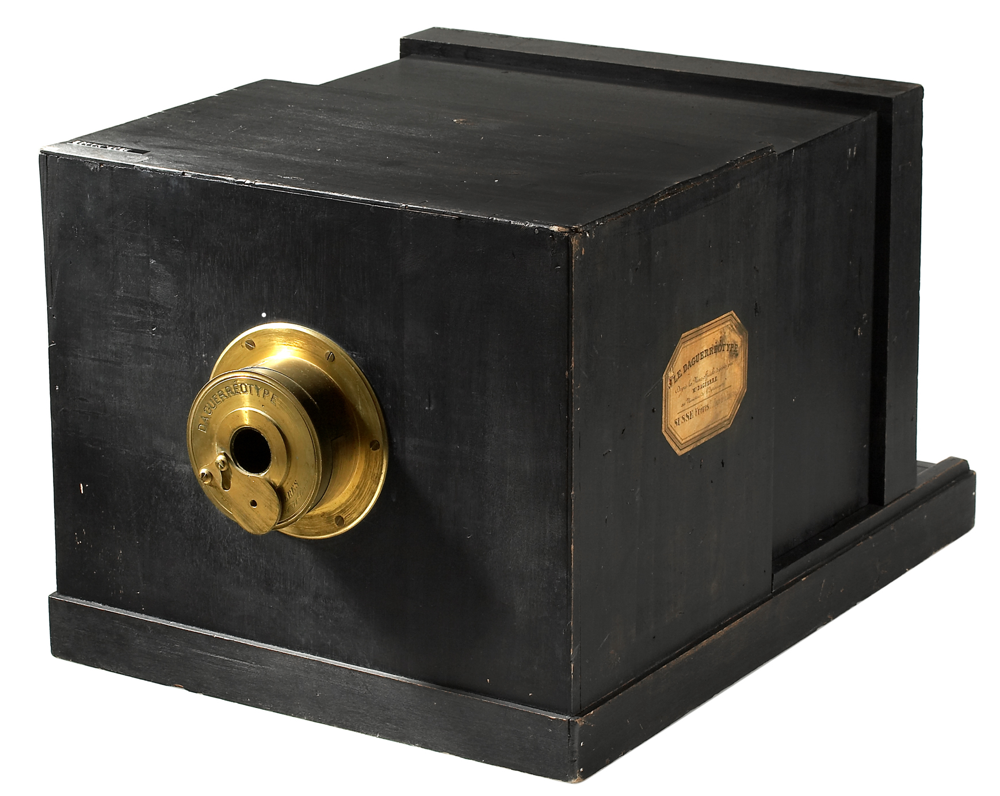

3. Blokea: Irudiaren Erreprodukzioa eta Argazkigintza

Dagerrotipoa: Kopia bakarreko objektu bitxi eta nitidoa.
Argazkigintzaren hastapenak aztertzean, ezinbestekoa da Joseph Nicéphore Niépceren figura nabarmentzea, bera izan baitzen, 1826an, argiaren bidezko irudi bat modu iraunkorrean finkatzea lortu zuen lehena. Heliografia izeneko prozeduraren bitartez, hau da, Judeako betun-geruza batekin estalitako eztainuzko plaka bat erabiliz, Niépcek zortzi ordu baino gehiagoko esposizio-denbora behar izan zuen historiaren lehen argazkia ateratzeko, Le Gras-eko leihoaren ikuspegia gauzatzeko hain zuzen ere. Alabaina, emaitza hura hastapeneko saialdi soil bat baino gehiago izan zen, izan ere, Louis Daguerrek Niépceren heriotzaren ondoren teknika hori findu eta 1839an dagerrotipoa aurkeztu zuenean, argazkigintzak lehenengo jauzi kualitatiboa eman zuen. Dagerrotipoak irudi nitidoak eta xehetasun handikoak eskaintzen zituen kobre-plaka zilarreztatu baten gainean, baina, tamalez, kopia bakarra sortzeko muga zeukan, irudi bakoitza objektu bitxi eta errepikaezina zelarik.
Aitzitik, William Henry Fox Talbot intelektual britainiarrak bide zeharo ezberdin bat urratu zuen kalotipoaren asmakuntzarekin (1841). Horren bitartez, Talbotek negatibo-positibo sistema asmatu zuen, gaur egungo argazkigintza analogikoaren oinarrizko zutabea dena. Dagerrotipoaren aldean kalitatea (nitidotasuna) apur bat apalagoa izan bazitekeen ere, paperezko zuntzen eraginez irudia lausoagoa baitzen, kalotipoaren abantaila nagusia irudi baten kopia anitz egiteko aukera zen, paperezko negatiboari esker. Horrela bada, argazkigintza ez zen jada irudi bakar eta estatiko bat, baizik eta modu masiboan zabaltzeko potentziala zuen tresna berri bat, The Pencil of Nature (1844) liburuarekin Talbotek berak erakutsi zuen bezala.
Hurrengo mugarria George Eastmanen eskutik iritsi zen XIX. mendearen amaieran, hark lortu baitzuer argazkigintza eliteen esparrutik atera eta jendarte osora zabaltzea. Eastmanek Kodak kamera merkaturatu zuenean (1888), ordura arteko prozesu kimiko konplexu eta astunak erraztu zituen, "zuk botoia sakatu, guk gainontzekoa egingo dugu" lelopean. Pelikula malguaren asmakuntzak eta kamerak fabrikara errebelatzera bidaltzeko sistemak argazkigintzaren demokratizazioa ekarri zuten. Horren ondorioz, argazkia ez zen jada adituen kontua, edonoren bizitzako uneak izozteko bitarteko irisgarria baizik, gizartearen ikus-kultura betiko eraldatuz eta diseinuari "errealismo" berri bat eskainiz.
Azkenik, argazkigintzaren iraultza komunikazio idatzira iritsi zen Stephen H. Horganen lanari esker. Horganek halftone edo erdiko tonuen teknika fotomekanikoa garatu zuen, zeinak argazkien gris-eskala tamaina desberdineko puntu sare bihurtzen zuen, egunkarietako tintak eta paperak onartu ahal izateko. Prentsa-makinek ezin zituzten grisak inprimatu (beltza edo zuria bakarrik), baina puntu sare horrek begia engainatzen zuen gris-tonuen ilusioa sortuz. Horri esker, 1880an lehenengo argazkia inprimatu ahal izan zen prentsa idatzian (Shantytown izenekoa), testuaren eta irudiaren arteko ezkontza ezin hobea lortuz. Laburbilduz, Niépceren lehen finkapenetik Horganen inprimatze-tekniketaraino, argazkigintzak bide luzea egin zuen esperimentu kimiko izateari utzi eta mundua ikusteko zein informatzeko modu nagusi bihurtu arte.